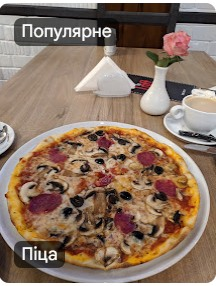

КАФЕ · РЕСТОРАН · ШКЛО
Смакуй момент
у Loft Cafe
Місце для зустрічей, смачної їжі та вечорів, які хочеться повторити.
01 / 03GOOD FOOD. GOOD MOOD.
01 — ПРО LOFT CAFE
Твій затишний
куток у Шклі.
Заходь на ароматну каву, обирай щось смачненьке з меню та залишайся заради атмосфери. У Loft Cafe кожна зустріч стає особливою.
Завітати до нас ↗СмачноСтрави на будь-який настрій
ЗатишноКава, розмови й відпочинок
Для своїхЗустрічайся з близькими
“
Смачна їжа — це лише початок.
Головне — моменти разом.
03 — ЗАВІТАЙ ДО НАС
Побачимось
у Loft Cafe.
Чекаємо на тебе щодня — приходь на обід, каву чи вечір із друзями.
Прокласти маршрут ↗АДРЕСА
вулиця Петра Сагайдачного, 62а,
Шкло, Львівська область
ГРАФІК РОБОТИ
Понеділок — Неділя12:00–23:00
Щодня з 12:00 до 23:00